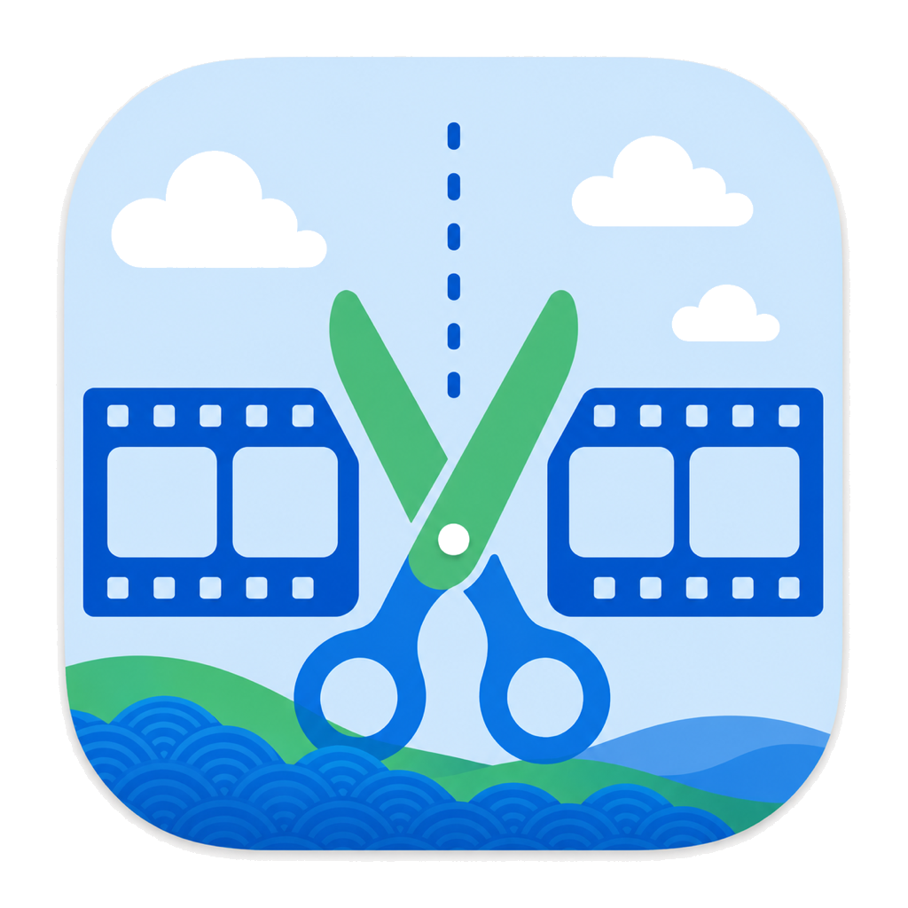
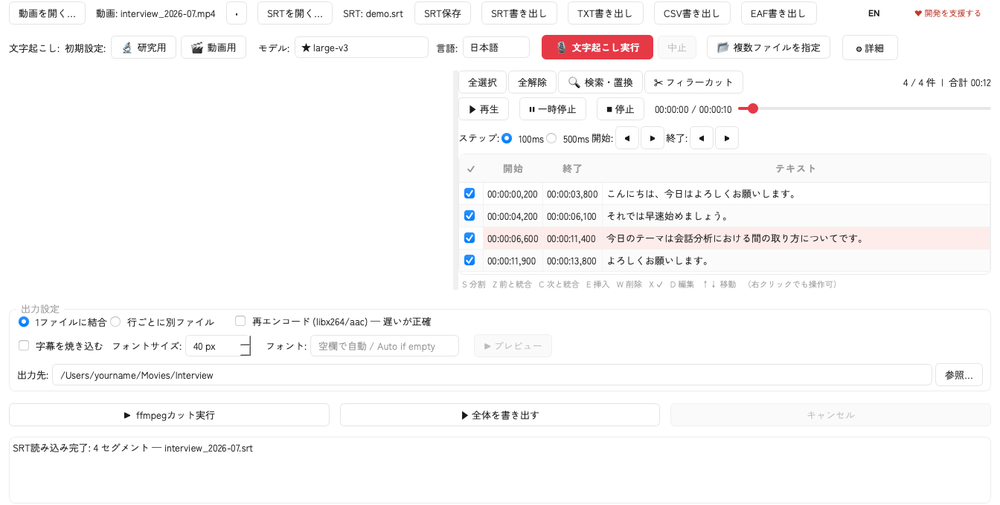

EasyTranscribe
動画を開いてボタンを押すだけ。
完全ローカル・無料・サービス終了なしの文字起こしツール。

Features
OpenAI Whisper で 100 言語に対応。講義・会議・インタビュー動画を自動転写。
文字起こし結果から残したい部分だけ選んで、動画をカット出力。時間の微調整もかんたん。
複数ファイルをキュー処理。実行中もファイルを追加でき、残り時間を推定表示。
「えー」「あの」などを 8 言語のリストから自動除去。カスタマイズも可。
太ゴシック・白文字・黒縁取りで映像に直接焼き込み。縦動画も自動対応。
言語学ツール ELAN 用の EAF ファイルとして書き出し。研究用途にも対応。
Citation
研究等でご利用の際は、以下のように引用してください：
佐々木玲仁 (2026). おまかせ文字起こし (EasyTranscribe) [Computer software]. https://doi.org/10.5281/zenodo.20515527